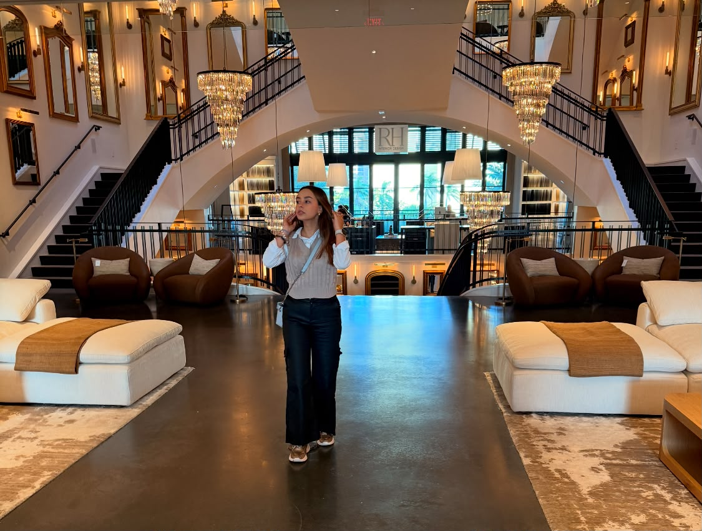

Short-Term Goals
- Graduate with my Major in Business Administration, Minor in Computer Information Systems, and concentration in Management from Northwestern State University in December 2026.
- Graduate with my Major in Business Administration from Universidad Libre Pereira, Colombia in December 2026.
- Apply for and begin my Master of Project Management in the United States.
Long-Term Goals
- Become the CEO of a technology company.
- Obtain private investment to increase the capital of my company.
- Create a scholarship program and a package of discounts and benefits for students.
Reflection
Who I am now is the result of years in which my determination to succeed has overcome every obstacle. I define my story as extraordinary because, since I was young, my mind has been clear on what I want to do. All my experiences and knowledge have been focused on one target: the place where I am now. A student with multiple studies, certifications, and skills. A future CEO of a technology company.